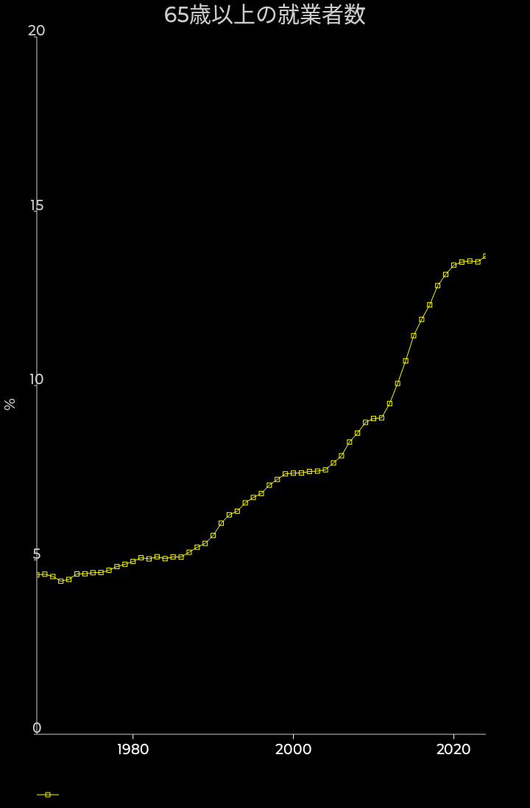

就業者数のうち65歳以上の占める割合

高齢化の文脈では65歳までの人口を生産年齢人口として、それと65歳以上の人口の比率を良く議論します。
一方で、周りを見ていると65歳以上の労働者も増えていそうな気もします。
そこで、ここでは単純に、全就業者数に占める65歳以上の就業者数の割合を労働力調査から見てみましょう。（季節調整値）
グラフから、2013年頃から大きく増えているのが見て取れます。
ここ数年は増加の傾きは小さくなり、2022年は13.5%ほどとなっています。
高齢者が元気に働いてくれれば高齢化の問題を軽減してくれるのは間違いありません。
ここ数年は、かなりうまく高齢者に働いてもらう事に成功しているように見えます。